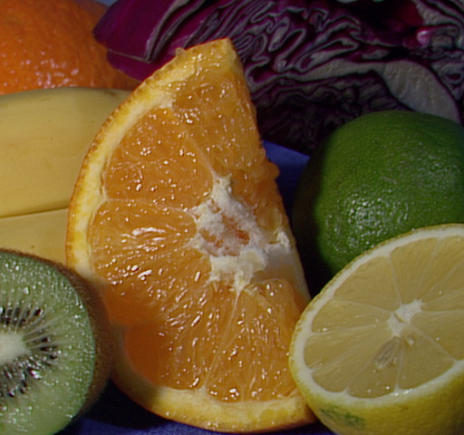

Interactive Mask demo
Interactively create a polygon mask.
This tutorial demonstrates how to make mask image (black and white). The program takes as input a source image and outputs its corresponding mask image.
Sources:
function varargout = create_mask_demo_gui(im) % load an image if nargin < 1 src = imread(fullfile(mexopencv.root(),'test','fruits.jpg')); elseif isempty(im) [im,cancel] = imgetfile(); assert(~cancel, 'No file selected'); src = imread(im); elseif ischar(im) src = cv.imread(im, 'Color',true); else src = im; end assert(size(src,3) == 3, 'Expecting a color source image'); % shared data sz = size(src); out = []; % output image pts = []; % 2D points % create the UI h = buildGUI(); onReset([],[]); if nargout > 0, varargout{1} = h; end function h = buildGUI() %BUILDGUI Creates the UI h = struct(); h.fig = figure('Name','Interactive Mask', 'Menubar','none', ... 'Position',[200 200 sz(2) sz(1)]); if ~mexopencv.isOctave() %HACK: not implemented in Octave movegui(h.fig, 'center'); end h.ax = axes('Parent',h.fig, 'Units','normalized', 'Position',[0 0 1 1]); if ~mexopencv.isOctave() h.img = imshow(src, 'Parent',h.ax); else %HACK: https://savannah.gnu.org/bugs/index.php?45473 axes(h.ax); h.img = imshow(src); end end function onHelp(~,~) %ONHELP Display usage help dialog hd = helpdlg({ 'Left-click the mouse to define the vertices of the polygon.' 'Right-click when finished to close the polygon, connecting' 'the last vertex with the first.' 'Hot keys:' ' h: usage dialog' ' r: reset' ' s: save current output image as PNG image' ' p: save current points matrix as MAT-file' ' q: quit the program' }, 'Interactive mask demo'); set(hd, 'WindowStyle','modal'); end function onReset(~,~) %ONRESET Restart from scratch % reset data pts = zeros(0,2); out = src; % register mouse button handlers and change cursor set(h.fig, 'Pointer','cross', 'WindowKeyPressFcn',@onType, ... 'WindowButtonDownFcn',@onMouseDown, ... 'WindowButtonUpFcn',@onMouseUp); % update plot set(h.img, 'CData',out); drawnow; end function onType(~,e) %ONTYPE Event handler for key press on figure % handle keys switch e.Key case 'r' onReset([],[]); case 'h' onHelp([],[]); case 's' fname = [tempname() '.png']; imwrite(out, fname); fprintf('Output saved as "%s"\n', fname); case 'p' uisave({'pts'}, 'points.mat'); case {'q', 'escape'} close(h.fig); end end function onMouseDown(~,~) %ONMOUSEDOWN Event handler for mouse down on figure if strcmp(get(h.fig,'SelectionType'), 'normal') % get current location of mouse pointer pt = get(h.ax, 'CurrentPoint'); pt = round(pt(1,1:2)); % draw point out = cv.circle(out, pt, 2, ... 'Color',[255 0 0], 'Thickness','Filled'); % store point pts(end+1,:) = pt; % connect to previous point by a straight line if size(pts,1) >= 2 out = cv.line(out, pts(end-1,:), pts(end,:), ... 'Color',[255 0 0], 'Thickness',2); end % update plot set(h.img, 'CData',out); drawnow; else % create a polygon from all vertices out = src; if ~isempty(pts) out = cv.polylines(out, pts, ... 'Closed',true, 'Color',[0 0 0], 'Thickness',2); end % update plot set(h.img, 'CData',out); drawnow; end end function onMouseUp(~,~) %ONMOUSEUP Event handler for mouse up on figure % only respond to right mouse button up if strcmp(get(h.fig,'SelectionType'), 'normal'), return; end % unregister all mouse button handlers set(h.fig, 'Pointer','arrow', ... 'WindowButtonDownFcn','', 'WindowButtonUpFcn',''); % create binary mask from polygon mask = zeros(sz(1:2), 'uint8'); if ~isempty(pts) mask = cv.fillPoly(mask, pts, 'Color',[255 255 255]); end cv.imwrite(fullfile(tempdir(), 'mask.png'), mask); disp(['Mask saved: ' fullfile(tempdir(), 'mask.png')]); % apply mask on image out = bsxfun(@times, uint8(mask~=0), src); % update plot set(h.img, 'CData',out); drawnow; end end